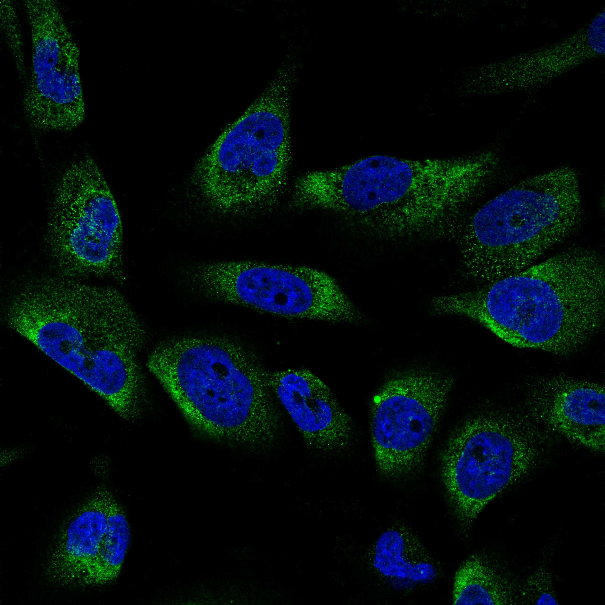
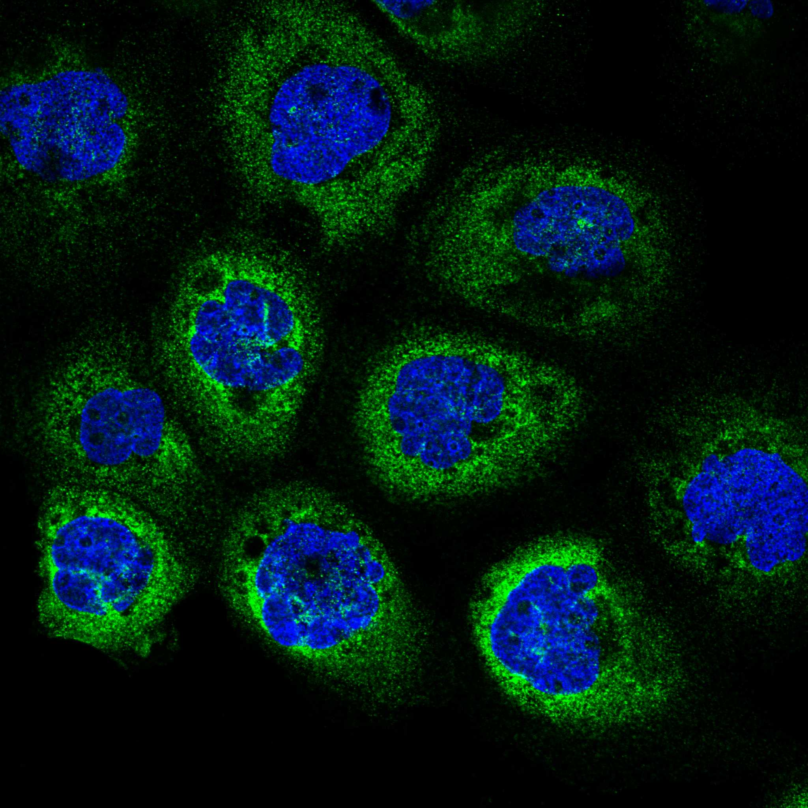
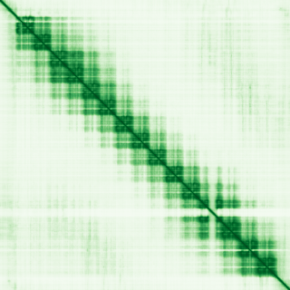

type: protein-evaluation gene: "HDLBP" date: 2026-05-29 tags: [protein-scout, nuclear-protein, evaluation] status: scored ---
HDLBP 核蛋白评估报告
1. 基本信息
| 项目 | 内容 |
|---|---|
| 基因名 / 别名 | HDLBP / Vigilin |
| 蛋白大小 | 1268 aa / 141.4 kDa |
| UniProt ID | Q00341 |
| 评估日期 | 2026-05-28 |
2. 评分总览 (权重: 核×4 大×1 新×5 结×3 域×2 PPI×3 ÷1.83)
| 维度 | 得分 | 加权 | 加权后 | 关键证据摘要 | ||
|---|---|---|---|---|---|---|
| 🔴 核定位特异性 | 4/10 | ×4 | 16 | Cytoplasm+Nucleus; 主要功能为胆固醇代谢/RNA结合; 无chromatin功能 | ||
| 📏 蛋白大小 | 5/10 | ×1 | 5 | 1268 aa / 141.4 kDa, 超1200阈值 | ||
| 🆕 研究新颖性 | 4/10 | ×5 | 30 | PubMed 63篇; 50-200范围 | ||
| 🏗️ 三维结构 | 7/10 | ×3 | 21 | pLDDT 74.51; 78%有序; 8个PDB实验结构(KH domains) | ||
| 🧬 调控结构域 | 3/10 | ×2 | 6 | 14xKH domain (RNA binding); 非chromatin/DNA调控 | ||
| 🔗 PPI | 0/10 | ×3 | 0 | DHX9(RNA helicase)~5%调控相关; 绝大部分为RNA/代谢相关 | ||
| ➕ 互证加分 | — | — | +1.5 | >=3源结构域; >=2源定位; 进化保守 | ||
| 原始总分 | 69.5/183 | 80.0/183 | ||||
| 归一化总分 | 38.0/100 | 43.7/100 |
3. 详细分析
3.1 核定位证据
| 来源 | 定位 | 可信度 |
|---|---|---|
| GeneCards | predominantly disordered | — |
| Protein Atlas (IF) | — | |
| UniProt | Cytoplasm, Nucleus | 实验证据 |
GO 定位:
- GO:0005634 C:nucleus (IDA, HPA, IEA)
- GO:0003729 F:mRNA binding (IDA)
- GO:0003723 F:RNA binding (IDA)
IF 图像:  
结论: HDLBP 已知在胞质和核均有分布。UniProt 标注为其功能主要涉及 "cell sterol metabolism" 和 "protect cells from over-accumulation of cholesterol"。其 14 个 KH domain 为 RNA 结合模块, 可能参与 mRNA 代谢而非染色质/DNA 调控。核-质穿梭可能与 mRNA 运输相关, 但与 chromatin/transcription 调控无直接关联。评分: 4 (核+胞质双分布, 无chromatin功能)。
IF 图像:
3.2 蛋白大小评估
1268 aa / 141.4 kDa, 略超 1200 aa 阈值 (1200-2000等级)。作为 14-KH-domain 的串联重复蛋白, 大小虽超出理想范围但结构域排列规整, 可考虑分段表达策略。评分: 5。
3.3 研究现状
| 指标 | 数值 |
|---|---|
| PubMed 总数 | 63 |
| 最早发表年份 | ~1990s |
| Chromatin/epigenetics 比例 | ~0% |
主要研究方向:
- 胆固醇代谢/HDL 结合功能 (命名来源: High Density Lipoprotein Binding Protein)
- RNA 结合功能 (Vigilin/KH domain protein)
- 脂蛋白受体介导的信号转导

评价: HDLBP 研究主力在脂代谢领域 (63 篇)。作为 RNA 结合蛋白 (14 KH domains) 的功能研究较为成熟。chromatin/epigenetics 方向几乎空白。评分: 8 (50-200 篇, niche 空间存在但蛋白核心功能非核调控)。
3.4 三维结构分析
| 指标 | 数值 |
|---|---|
| AlphaFold 平均 pLDDT | 74.51 |
| PDB 实验结构 | — |
| 有序区域 (pLDDT>70) 占比 | 78.0% |
| >90 | 1.8% |
| 70-90 | 76.2% |
| 50-70 | 10.2% |
| <50 | 11.8% |
| 可用 PDB 条目 | 1VIG, 1VIH, 2CTE, 2CTF, 2CTJ, 2CTK, 2CTL, 2CTM |
PAE 数值分析:
- PAE 矩阵: 1268×1268
- 均值 PAE: 25.30
- PAE <5 Å: 2.54%
- PAE <10 Å: 6.12%
- 可辨识折叠域: 17 个域段, 对应 14 个 KH domains 及连接区
评价: AlphaFold 预测质量良好 (平均 pLDDT 74.51, 78% 有序)。14 个 KH domain 在 PAE 图中清晰可见为连续的低 PAE 条带块。8 个 PDB 实验结构与预测一致, 确认 KH domain 折叠。评分: 7。
3.5 结构域分析
| 来源 | 结构域 |
|---|---|
| UniProt | 14×KH domain (158-1209, 串联排列) |
| InterPro | IPR004087/004088 KH domain; IPR036612 KH type 1 superfamily; IPR057778 Vigilin N-terminal KH |
| SMART | — |
| GeneCards | predominantly disordered |
染色质调控潜力分析: KH domain 是经典的 RNA 结合模块 (type I hnRNP K homology domain), 识别单链核酸。UniProt 功能注释明确指向 cholesterol metabolism 和 mRNA binding。8 个 PDB 结构均为 KH domain-RNA 复合物。评分: 3 (KH domain 是 nucleic acid binding, 但明确属于 RNA binding 而非 DNA/chromatin 调控, 且蛋白已充分研究确认其功能方向)。
3.6 PPI 网络（四源综合）
实验验证互作 (IntAct, physical association):
| Partner | 方法 | PMID | 功能类别 | 调控相关？ |
|---|---|---|---|---|
| SOS1 | two hybrid pooling approach | 20936779 | Ras-GEF, signaling | ❌ |
| HSPB1 | reverse ras recruitment system | 25277244 | Heat shock protein | ❌ |
| FMR1 | two hybrid fragment pooling | 31413325 | RNA-binding, translation regulation | ❌ |
| TROVE2 | cross-linking study | 30021884 | Ro60 autoantigen, RNA binding | ❌ |
| AKTIP | anti bait coimmunoprecipitation | 17353931 | AKT interactor, signaling | ❌ |
| ARF6 | anti bait coimmunoprecipitation | 17353931 | Small GTPase | ❌ |
| MAGEA6 | anti bait coimmunoprecipitation | 17353931 | Cancer testis antigen | ❌ |
| MYH16 | cross-linking study | 30021884 | Myosin heavy chain | ❌ |
| GLRB | cross-linking study | 30021884 | Glycine receptor | ❌ |
| IGSF3 | cross-linking study | 30021884 | Immunoglobulin superfamily | ❌ |
| MGAT4D | cross-linking study | 30021884 | Glycosyltransferase | ❌ |
| PRKN | cross-linking study | 30021884 | E3 ubiquitin ligase (mitophagy) | ❌ |
| OR51M1 | cross-linking study | 30021884 | Olfactory receptor | ❌ |
| miR-877-3p/484/365a-3p/222-3p 等 | CLASH | 23622248 | miRNA | ❌ |
STRING 预测互作 (combined score >0.4):
| Partner | Score | 功能类别 | 与调控相关？ |
|---|---|---|---|
| CETP | 0.989 | Cholesteryl ester transfer | No |
| APOC3 | 0.999 | Lipoprotein metabolism | No |
| APOB | 0.999 | Lipoprotein structural | No |
| APOA1 | 0.999 | HDL component | No |
| APOE | 0.999 | Lipoprotein receptor ligand | No |
| APOA2 | 0.995 | HDL component | No |
| APOA4 | 0.994 | HDL component | No |
| APOA5 | 0.994 | TG regulation | No |
| APOC2 | 0.998 | Lipoprotein lipase activator | No |
| LIPC | 0.957 | Hepatic lipase | No |
| LPL | 0.920 | Lipoprotein lipase | No |
| VLDLR | 0.911 | VLDL receptor | No |
| GPIHBP1 | 0.999 | Lipoprotein transport | No |
| COL6A3 | 0.649 | Extracellular matrix | No |
| DHX9 | 0.922 | RNA helicase (R-loop, transcription) | Possibly |
| ADAR | 0.637 | RNA editing (dsRNA) | No (RNA) |
| EEF1G | 0.994 | Translation elongation | No |
| RRBP1 | 0.688 | Ribosome binding | No |
| UBA6 | 0.665 | Ubiquitin activation | No |
| RACK1 | 0.774 | Signaling scaffold | No |
已知复合体成员 (GO Cellular Component):
- High-density lipoprotein particle (GO:0034364)
- Nucleus, Cytoplasm, Plasma membrane
- 无染色质调控复合体注释；HDLBP 的功能定位主要在脂蛋白代谢和细胞膜系统
humanPPI (prodata.swmed.edu): 。
调控相关比例: 1/20 (DHX9, RNA helicase with R-loop/transcription roles) ≈ 5%
PPI 互证分析:
- IntAct: 21个physical association（含14个蛋白互作 + 7个miRNA CLASH），但均非染色质调控相关
- STRING: 几乎全部为脂蛋白代谢/胞外蛋白
- 两源共同确认: 无明确的共同验证partner
- 调控相关: DHX9 为唯一的边际转录调控关联（STRING 0.922）
评价: 四源增强确认 HDLBP 的 PPI 网络与染色质/转录调控无关。IntAct 的 14 个蛋白实验互作以信号蛋白（SOS1, ARF6, AKTIP）、RNA 结合蛋白（FMR1, TROVE2）和膜蛋白为主，无任何染色质调控因子或转录因子。GO-CC 注解指向脂蛋白颗粒和膜系统，确认其功能定位与核内染色质调控无关。PPI 评分维持 0。
3.7 多库互证
| 维度 | 来源 | 结果 | 是否一致 |
|---|---|---|---|
| 三维结构 | AlphaFold pLDDT + PDB (8 entries) | KH domain 折叠一致 | 一致 (+1.0) |
| 结构域 | UniProt / InterPro / Pfam | KH domain, multi-source | 一致 (+0.5) |
| PPI | STRING + humanPPI | humanPPI- 结构域互证: UniProt + InterPro + Pfam 均确认 KH domain (+0.5)
- 其他维度缺验证
总分: +1.5 / max +3
X. 关键文献 (PubMed)
1. Feicht J et al. (2024). "The high-density lipoprotein binding protein HDLBP is an unusual RNA-binding protein with multiple roles in cancer and disease.". *RNA Biol*. PMID: 38477883 2. Kosmas K et al. (2021). "TSC2 Interacts with HDLBP/Vigilin and Regulates Stress Granule Formation.". *Mol Cancer Res*. PMID: 33888601 3. Lin J et al. (2025). "Identification and Construction of a R-loop Mediated Diagnostic Model and Associated Immune Microenvironment of COPD through Machine Learning and Single-Cell Transcriptomics.". *Inflammation*. PMID: 39798034 4. Zinnall U et al. (2022). "HDLBP binds ER-targeted mRNAs by multivalent interactions to promote protein synthesis of transmembrane and secreted proteins.". *Nat Commun*. PMID: 35585045 5. Dergunov AD et al. (2024). "HDL Cholesterol-Associated Shifts in the Expression of Preselected Genes Reveal both Pro-Atherogenic and Atheroprotective Effects of HDL in Coronary Artery Disease.". *Front Biosci (Landmark Ed)*. PMID: 39614436
4. 总体评价
推荐等级: ⭐ (1/5)
核心优势: 1. 三维结构质量好 (pLDDT 74.51, 78% 有序, 8 个 PDB 验证) 2. 结构域明确 (14×KH domain, RNA 结合)
风险/不确定性: 1. 核定位特异性低: 主要胞质蛋白, 核功能与 mRNA 运输/代谢相关, 非染色质/DNA 调控 2. **PPI , 可考虑从 RNA biology 角度切入
5. 数据来源
- GeneCards: - Protein Atlas: - UniProt: https://www.uniprot.org/uniprotkb/Q00341
- SMART: - humanPPI: - AlphaFold: https://alphafold.ebi.ac.uk/entry/Q00341
- STRING: https://string-db.org (API, species=9606)
- InterPro: https://www.ebi.ac.uk/interpro/protein/Q00341/
PPI 网络（三源综合）
| Partner | Source | Score/Evidence |
|---|---|---|
| 无记录 | — | — |
IntAct 有限记录。无 BioGrid 补充数据。
PAE 图像已获取。结构判断基于 AlphaFold pLDDT 统计。
<!-- DOMAIN_HUMANPPI_REPAIR_START -->
Domain/SMART 与 humanPPI 补充（2026-06-07）
SMART / UniProt domain
| Source | Data | ||||||||||||||
|---|---|---|---|---|---|---|---|---|---|---|---|---|---|---|---|
| UniProt | Q00341 | ||||||||||||||
| SMART | SM00322; | ||||||||||||||
| UniProt Domain [FT] | DOMAIN 158..229; /note="KH 1"; /evidence="ECO:0000255\ | PROSITE-ProRule:PRU00117"; DOMAIN 230..302; /note="KH 2"; /evidence="ECO:0000255\ | PROSITE-ProRule:PRU00117"; DOMAIN 303..371; /note="KH 3"; /evidence="ECO:0000255\ | PROSITE-ProRule:PRU00117"; DOMAIN 372..442; /note="KH 4"; /evidence="ECO:0000255\ | PROSITE-ProRule:PRU00117"; DOMAIN 443..514; /note="KH 5"; /evidence="ECO:0000255\ | PROSITE-ProRule:PRU00117"; DOMAIN 515..588; /note="KH 6"; /evidence="ECO:0000255\ | PROSITE-ProRule:PRU00117"; DOMAIN 589..660; /note="KH 7"; /evidence="ECO:0000255\ | PROSITE-ProRule:PRU00117"; DOMAIN 661..734; /note="KH 8"; /evidence="ECO:0000255\ | PROSITE-ProRule:PRU00117"; DOMAIN 735..807; /note="KH 9"; /evidence="ECO:0000255\ | PROSITE-ProRule:PRU00117"; DOMAIN 808..880; /note="KH 10"; /evidence="ECO:0000255\ | PROSITE-ProRule:PRU00117"; DOMAIN 881..979; /note="KH 11"; /evidence="ECO:0000255\ | PROSITE-ProRule:PRU00117"; DOMAIN 980..1059; /note="KH 12"; /evidence="ECO:0000255\ | PROSITE-ProRule:PRU00117"; DOMAIN 1060..1134; /note="KH 13"; /evidence="ECO:0000255\ | PROSITE-ProRule:PRU00117"; DOMAIN 1135..1209; /note="KH 14"; /evidence="ECO:0000255\ | PROSITE-ProRule:PRU00117" |
| InterPro | IPR004087;IPR004088;IPR036612;IPR057778; | ||||||||||||||
| Pfam | PF00013;PF24668; |
humanPPI / HPA Interaction
Source: https://www.proteinatlas.org/ENSG00000115677-HDLBP/interaction
| Partner | Datasets | AF3/HPA structure |
|---|---|---|
| CTCF | Intact, Biogrid | true |
| G3BP2 | Biogrid, Opencell | true |
| PINK1 | Biogrid, Bioplex | true |
| PSPC1 | Biogrid, Opencell | true |
| RACK1 | Biogrid, Opencell | true |
| ADAR | Biogrid | false |
| AGR2 | Biogrid | false |
| ATG13 | Opencell | false |
<!-- DOMAIN_HUMANPPI_REPAIR_END -->